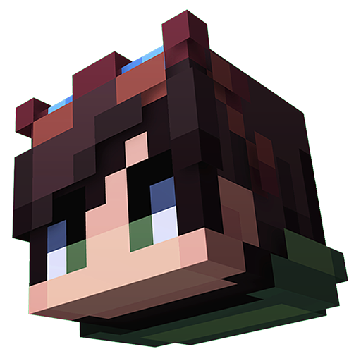

File
New Skin...
Open Skin...
Add Reference Image...
Save As...
View
✓
Toolbar
✓
Color Panel
✓
Layers Panel
Background Color
✓
Toggle Grid
✓
Toggle 3D Layer
✓
Toggle 2D Parts Guide
Adjustments
Hue / Saturation...
Brightness / Contrast...
Sepia...
Gaussian Blur...
Resize...
Settings
Keyboard Shortcuts...

Cardor's 3D Editor
3D
2D
Skin Setup
Model Type
Steve (4px Arms)
Alex (3px Arms)
Resolution
Standard (64x64)
HD (128x128)
Cancel
Confirm
Import Image
What would you like to do with this image?
Cancel
Add Layer
Open File
AutoFill Warning
The front-face design will be applied to the other faces of the related body parts. Do you want to continue?
Cancel
Apply
Keyboard Shortcuts
Done
3D Skin Screenshot
Close
Copy
Download (PNG)
Save As
File name
File type
PNG image (*.png)
Cancel
Save...
Layer Properties
×
Name
Opacity:
255
Blend Mode
Normal
Multiply
Overlay
Screen
Visible
Mirror
Full Mirror
Copy Limb
Grid
AutoFill
2D Guide
Hue / Saturation
×
Hue
−
+
Saturation
−
+
Lightness
−
+
Cancel
OK
Brightness / Contrast
×
Brightness
−
+
Contrast
−
+
Cancel
OK
Sepia Filter
×
Intensity:
25
%
Cancel
OK
Gaussian Blur
×
Radius:
2
Cancel
OK
Resize Skin
New resolution
64 × 64
128 × 128
Resampling method
Cancel
Resize
Color
×
H
S
L
A
T
0%
BOYUT
4
HARDNESS
15
#
Layers
×